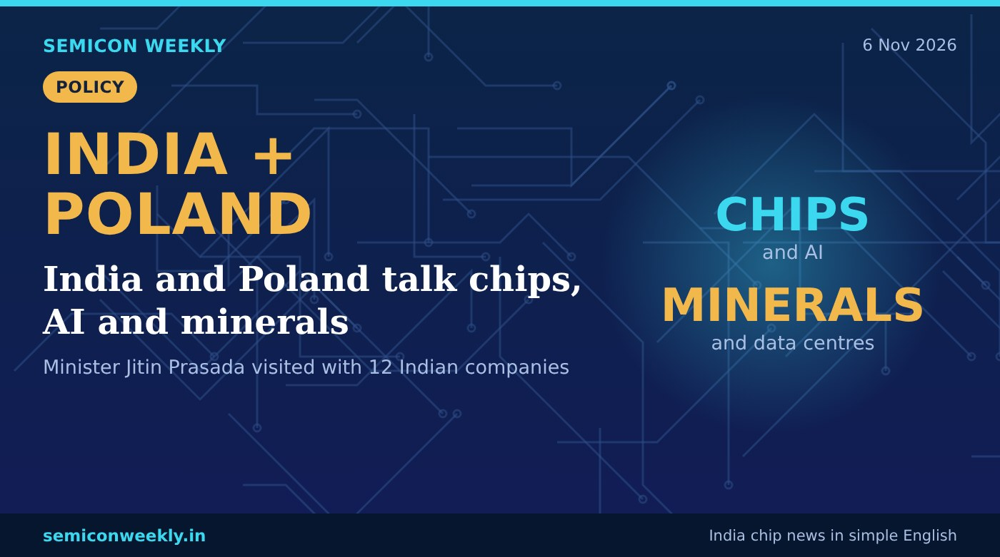

India and Poland talk chips, AI and minerals
A trade visit to Poland, weeks before India and the EU plan to sign their big trade deal.

In short
- Commerce minister Jitin Prasada visited Poland on 2–3 November with 12 Indian companies.
- He talked with Polish ministers about chips, AI, data centres and critical minerals.
- India and the EU plan to sign their trade deal in mid-December.
Key numbers
2–3 NovDates of the visit
12Indian companies on the trip
Mid-DecPlanned India–EU trade deal
What happened
- Union minister Jitin Prasada led an Indian business group to Poland on 2 and 3 November.
- Twelve Indian companies went with him.
- He met Polish ministers and discussed semiconductors, AI, data centres and critical minerals.
- The visit comes just before India and the European Union sign their free trade agreement, planned for mid-December.
Why it matters
Why this is useful
- Poland is one of the fastest-growing economies in the EU and wants to grow its electronics and chip industry.
- Critical minerals are needed to make chips and batteries, and India wants more trusted suppliers.
Why it is good for freshers
- Chip and electronics links with Europe can bring more projects to Indian design and test teams.
- Learn the basics of how chips are made and tested; global partnerships need engineers who understand the full flow.
- Data centre and AI hardware skills are in demand in Europe and India.
Why it is good for India
- More partners in Europe means India depends less on a few countries for chip materials.
- A trade deal with the EU can make it easier for Indian companies to sell and work in Europe.
Words in this story
- Critical minerals: rare metals like lithium, gallium and germanium used in chips, batteries and electronics.
- Free trade agreement (FTA): a deal between countries to cut taxes and rules on trade with each other.
- Data centre: a large building full of computers that run cloud services and AI.